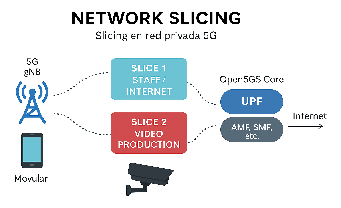

RETO3 Network Slicing EiTB.docx
CURSO INSTALACIÓN Y CONFIGURACIÓN DE REDES 5G
“Caso de uso:Servicios diferenciados mediante Network Slicing en un evento deportivo de EiTB ”
Situación
Durante la retransmisión de un evento deportivo (por ejemplo, un partido de fútbol), EiTB necesita dar servicio a distintos tipos de usuarios y aplicaciones sobre la misma infraestructura 5G, pero con requisitos muy diferentes.
Algunos servicios son críticos y deben garantizar:
- Baja latencia.
- Alta prioridad.
- Ancho de banda asegurado.
Otros servicios pueden funcionar con:
- Prioridad baja.
- Mejores esfuerzos (best effort).
Para resolver este problema, EiTB implanta Network Slicing en su red privada 5G.
Servicios del escenario
Se definen al menos dos slices lógicos sobre la red 5G existente:
Slice 1 – Staff / Internet corporativo
- Usuarios: personal técnico y de producción.
- Dispositivos: móviles.
- Servicios:
- Acceso a Internet.
- Aplicaciones corporativas.
- Prioridad: media / baja.
### Slice 2 – Producción de vídeo
- Usuarios: cámaras y equipos de retransmisión.
- Dispositivos: routers 5G, cámaras IP.
- Servicios:
- Streaming de vídeo.
- Acceso a servidores internos de EiTB.
- Prioridad: alta.
- Baja latencia.
- Uplink priorizado.

Imagen: Red privada 5G con diferentes slices
Arquitectura de la red
La arquitectura es una evolución directa de la del Día 2:
- Core 5G (Open5GS)
- Funciones de control.
- Gestión de slices (S-NSSAI).
- Asociación SIM–slice.
- UPF(s)
- UPF compartido o UPF dedicado por slice.
- Políticas de tráfico diferenciadas.
- gNB único
- Emite una única red radio.
- Transporta múltiples slices simultáneamente.
- SIMs configuradas por slice
- Cada SIM se asocia a un APN y un slice específico.
Desarrollo del entrenamiento
Partiendo de la red con UPF distribuido ya operativa:
- Se crearán múltiples slices lógicos.
- Se asignarán distintos perfiles de servicio.
- Se validará que:
- Dos UEs conectados a la misma celda.
- Reciben un comportamiento de red distinto.
Conceptos clave a trabajar
Antes de iniciar la práctica, se introducirán los siguientes conceptos:
-
Network Slicing en 5G.
-
S-NSSAI:
-
SST (Slice/Service Type).
-
SD (Slice Differentiator).
-
Relación entre:
-
Slice.
-
APN.
-
UPF.
-
QoS y prioridades:
-
5QI.
-
AMBR.
-
Políticas de tráfico.
Parámetros de configuración
| Slice 1 – Staff / Internet Nombre del slice: Staff SST: SD: APN: AMBR: QoS / 5QI: | Slice 2 – Producción de vídeo Nombre del slice: Video SST: SD: APN: AMBR: QoS / 5QI: |
|---|---|
Se pide:
1. Esquema de Network Slicing
Realiza un esquema lógico que muestre:
- Un único gNB.
- Múltiples slices.
- Diferentes APNs.
- Asociación SIM → Slice → UPF.
Resultado esperado:
Esquema claro de slicing sobre red privada 5G.
2. Creación de slices
Configura en el Core 5G:
- Dos slices distintos.
- Identificados mediante S-NSSAI.
- Asociados a diferentes APNs.
3. Configuración de SIMs
- Crear o modificar SIMs existentes.
- Asociar cada SIM a:
- Un APN concreto.
- Un slice específico.
Preguntas:
- ¿Puede una SIM acceder a más de un slice?
- ¿Qué ocurre si el APN es incorrecto?
4. Verificación de funcionamiento
Para cada slice:
- Comprobar registro en red.
- Establecimiento de sesión PDU.
- Acceso a servicios permitidos.
Herramientas:
- Test de velocidad.
- Ping.
- Acceso a servicios internos.
- Logs del Core y UPF.
5. Comparativa de rendimiento
Crear una tabla comparativa entre slices:
- Velocidad (DL / UL).
- Latencia.
- Pérdida de paquetes.
- Acceso a recursos.
¿Qué pasa si…?
Analiza y documenta:
- Una SIM intenta usar un APN de otro slice
- Se elimina un slice del Core
- Dos slices comparten el mismo UPF
- Un slice no tiene salida a Internet
- Se degrada la prioridad del slice de vídeo
Explicar el impacto en el servicio percibido.
Casos de uso industriales y empresariales
Relacionar lo aprendido con escenarios reales:
- Producción audiovisual.
- Industria 4.0.
- Puertos y logística.
- Smart cities.
- Redes privadas empresariales.
Conclusiones
Responder y justificar:
- ¿Qué aporta Network Slicing frente a una red única?
- ¿Qué servicios se benefician más?
- ¿Por qué es clave para redes privadas 5G?
EXTRA
- Implementar un tercer slice:
- IoT / sensores.
- Ancho de banda mínimo.
- Prioridad baja.
- Simular congestión en un slice y observar:
- Impacto en el resto.
- Aislamiento entre servicios.